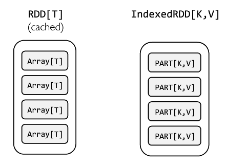
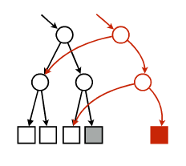
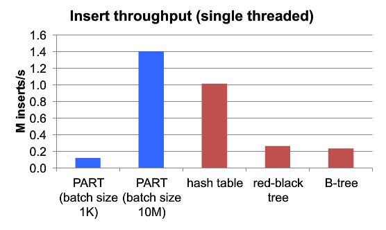
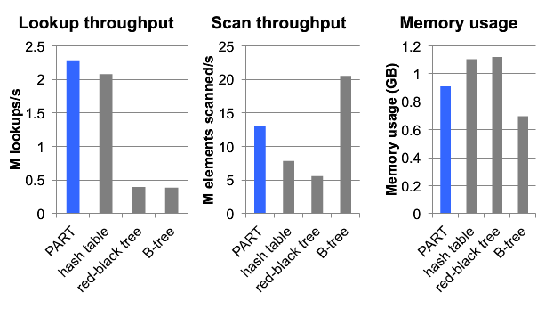

由于Spark RDD的Immutable特性，如果想要更新RDD里面的数据，就要对RDD中的每个Partition进行一次transformation，生成一个新的RDD。而对于Streaming Aggregation以及Incremental Algorithm之类的算法，每次迭代都会更新少量数据，但是需要迭代非常多的次数，每一次对RDD的更新代价相对较大。
针对这个问题AMPLab的Ankur Dave提出了IndexedRDD，它是Immutability和Fine-Grained updates的精妙结合。IndexedRDD是一个基于RDD的Key-Value Store，扩展自RDD[(K, V)]，可以在IndexRDD上进行高效的查找、更新以及删除。
IndexRDD的设计思路是：


IndexedRDD主要提供了三个接口：
class IndexedRDD[K: ClassTag, V: ClassTag] extends RDD[(K, V)] {
/** Gets the values corresponding to the specified keys, if any. */
def multiget(ks: Array[K]): Map[K, V]
/**
* Updates the keys in `kvs` to their corresponding values, running `merge` on old and new values
* if necessary. Returns a new IndexedRDD that reflects the modification.
*/
def multiput[U: ClassTag](kvs: Map[K, U], z: (K, U) => V, f: (K, V, U) => V): IndexedRDD[K, V]
/**
* Deletes the specified keys. Returns a new IndexedRDD that reflects the deletions.
*/
def delete(ks: Array[K]): IndexedRDD[K, V]
}此外IndexedRDD还提供了基于RDD构建IndexedRDD的函数:
object IndexedRDD {
/**
* Constructs an updatable IndexedRDD from an RDD of pairs, merging duplicate keys arbitrarily.
*/
def apply[K: ClassTag : KeySerializer, V: ClassTag] (elems: RDD[(K, V)]): IndexedRDD[K, V]
}下面这个例子来自IndexedRDD的Github页面，展示IndexedRDD的使用例子。
import edu.berkeley.cs.amplab.spark.indexedrdd.IndexedRDD
// Create an RDD of key-value pairs with Long keys.
val rdd = sc.parallelize((1 to 1000000).map(x => (x.toLong, 0)))
// Construct an IndexedRDD from the pairs, hash-partitioning and indexing
// the entries.
val indexed = IndexedRDD(rdd).cache()
// Perform a point update.
val indexed2 = indexed.put(1234L, 10873).cache()
// Perform a point lookup. Note that the original IndexedRDD remains
// unmodified.
indexed2.get(1234L) // => Some(10873)
indexed.get(1234L) // => Some(0)
// Efficiently join derived IndexedRDD with original.
val indexed3 = indexed.innerJoin(indexed2) { (id, a, b) => b }.filter(_._2 != 0)
indexed3.collect // => Array((1234L, 10873))
// Perform insertions and deletions.
val indexed4 = indexed2.put(-100L, 111).delete(Array(998L, 999L)).cache()
indexed2.get(-100L) // => None
indexed4.get(-100L) // => Some(111)
indexed2.get(999L) // => Some(0)
indexed4.get(999L) // => None目前IndexedRDD还没有merge到spark源码中，所以使用IndexedRDD需要添加以下依赖：
resolvers += "Spark Packages Repo" at "http://dl.bintray.com/spark-packages/maven"
libraryDependencies += "amplab" % "spark-indexedrdd" % "0.1"IndexedRDD的每个Partition的存储用的是Persisten Adaptive Radix Trees。它的主要特点有：
更多细节请看ART论文以及Github: ART Java实现。
下面是ART的主要函数：
public class ArtTree extends ChildPtr implements Serializable {
//拷贝一份镜像，其实就是增加一个root节点的引用
public ArtTree snapshot();
//寻找Key对应的Value
public Object search(final byte[] key);
//插入
public void insert(final byte[] key, Object value) throws UnsupportedOperationException;
//删除
public void delete(final byte[] key);
//返回迭代器
public Iterator<Tuple2<byte[], Object>> iterator();
//元素个数
public long size();
//析构
public int destroy();
...
}IndexedRDD的实现相当简洁，只有800LOC。
定义了如何把Key序列化成Byte Array，以及反序列化的方法
trait KeySerializer[K] extends Serializable {
def toBytes(k: K): Array[Byte]
def fromBytes(b: Array[Byte]): K
}
//默认实现了Long和String类型的KeySerializer
class LongSerializer extends KeySerializer[Long]
class StringSerializer extends KeySerializer[String]定义了Partition的接口
private[indexedrdd] abstract class IndexedRDDPartition[K, V] extends Serializable {
def multiget(ks: Iterator[K]): Iterator[(K, V)]
def multiput[U](
kvs: Iterator[(K, U)], z: (K, U) => V, f: (K, V, U) => V): IndexedRDDPartition[K, V] =
throw new UnsupportedOperationException("modifications not supported")
def delete(ks: Iterator[K]): IndexedRDDPartition[K, V] =
throw new UnsupportedOperationException("modifications not supported")
...
}Partion的PART实现，其中使用到了最重要的数据结构，即map: ArtTree。
private[indexedrdd] class PARTPartition[K, V]
(protected val map: ArtTree)
(override implicit val kTag: ClassTag[K],
override implicit val vTag: ClassTag[V],
implicit val kSer: KeySerializer[K])
extends IndexedRDDPartition[K, V] with Logging {
override def apply(k: K): V = map.search(kSer.toBytes(k)).asInstanceOf[V]
override def multiget(ks: Iterator[K]): Iterator[(K, V)] =
ks.flatMap { k => Option(this(k)).map(v => (k, v)) }
override def multiput[U](
kvs: Iterator[(K, U)], z: (K, U) => V, f: (K, V, U) => V): IndexedRDDPartition[K, V] = {
val newMap = map.snapshot()
for (ku <- kvs) {
val kBytes = kSer.toBytes(ku._1)
val oldV = newMap.search(kBytes).asInstanceOf[V]
val newV = if (oldV == null) z(ku._1, ku._2) else f(ku._1, oldV, ku._2)
newMap.insert(kBytes, newV)
}
this.withMap[V](newMap)
}
override def delete(ks: Iterator[K]): IndexedRDDPartition[K, V] = {
val newMap = map.snapshot()
for (k <- ks) {
newMap.delete(kSer.toBytes(k))
}
this.withMap[V](newMap)
}
...
}基于PARTPartition，IndexedRDD的实现就非常简单：
class IndexedRDD[K: ClassTag, V: ClassTag](
private val partitionsRDD: RDD[IndexedRDDPartition[K, V]])
extends RDD[(K, V)](partitionsRDD.context, List(new OneToOneDependency(partitionsRDD))) {
def multiget(ks: Array[K]): Map[K, V] = {
val ksByPartition = ks.groupBy(k => partitioner.get.getPartition(k))
val partitions = ksByPartition.keys.toSeq
// TODO: avoid sending all keys to all partitions by creating and zipping an RDD of keys
val results: Array[Array[(K, V)]] = context.runJob(partitionsRDD,
(context: TaskContext, partIter: Iterator[IndexedRDDPartition[K, V]]) => {
if (partIter.hasNext && ksByPartition.contains(context.partitionId)) {
val part = partIter.next()
val ksForPartition = ksByPartition.get(context.partitionId).get
part.multiget(ksForPartition.iterator).toArray
} else {
Array.empty
}
}, partitions, allowLocal = true)
results.flatten.toMap
}
def multiput[U: ClassTag](kvs: Map[K, U], z: (K, U) => V, f: (K, V, U) => V): IndexedRDD[K, V] = {
val updates = context.parallelize(kvs.toSeq).partitionBy(partitioner.get)
zipPartitionsWithOther(updates)(new MultiputZipper(z, f))
}
private class MultiputZipper[U](z: (K, U) => V, f: (K, V, U) => V)
extends OtherZipPartitionsFunction[U, V] with Serializable {
def apply(thisIter: Iterator[IndexedRDDPartition[K, V]], otherIter: Iterator[(K, U)])
: Iterator[IndexedRDDPartition[K, V]] = {
val thisPart = thisIter.next()
Iterator(thisPart.multiput(otherIter, z, f))
}
}
def delete(ks: Array[K]): IndexedRDD[K, V] = {
val deletions = context.parallelize(ks.map(k => (k, ()))).partitionBy(partitioner.get)
zipPartitionsWithOther(deletions)(new DeleteZipper)
}
private class DeleteZipper extends OtherZipPartitionsFunction[Unit, V] with Serializable {
def apply(thisIter: Iterator[IndexedRDDPartition[K, V]], otherIter: Iterator[(K, Unit)])
: Iterator[IndexedRDDPartition[K, V]] = {
val thisPart = thisIter.next()
Iterator(thisPart.delete(otherIter.map(_._1)))
}
}
...
}插入的吞吐率，在Batch Size比较大的情况下，比较有优势。

查询的速度是最快的，扫描和内存占用处于中间水平。
